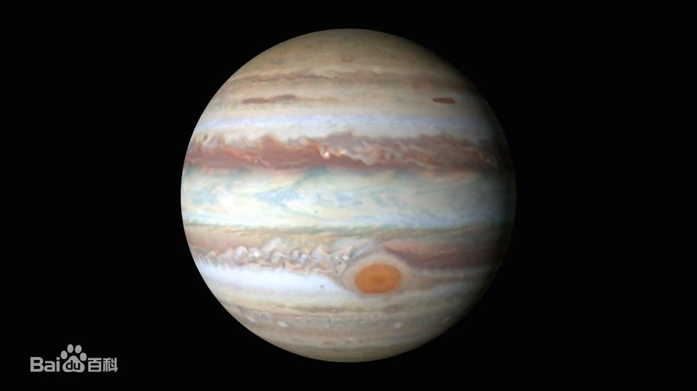

|  | 木星（Jupiter）是太阳系中距离太阳第五近的行星，也是太阳系中体积最大的行星。 古人早已认识这颗行星 ，罗马人以主神朱庇特命名这颗行星。古代中国则称木星为岁星，取其绕行天球 [19]一周约为12年，与地支相同之故。到西汉时期，《史记‧天官书》作者司马迁从实际观测发现岁星呈青色，与“五行”学说联系在一起，正式把它命名为“木星”。 从地球看木星，视星等最高可达-2.94等，已经可以在地面照出物体阴影。木星是继月球和金星之后，是夜空平均亮度第三的天体（火星在其轨道的特定点上时能短暂超过木星的亮度）。 木星是颗巨行星，质量是太阳的千分之一，但却是太阳系其他行星质量总和的2.5倍。木星的主要成分是氢，但只占十分之一分子数量的氦，却占了总质量的四分之一；它可能有岩石核心和重元素，但没有可以明确界定的固体表面。由于快速地自转，木星的外观呈现扁球体。大气层依纬度成不同的区域带，在彼此的交界处有湍流和风暴作用着。最显著的例子就是大红斑，这是17世纪第一次被望远镜见到后就未曾停歇过的巨大风暴。环绕着木星的还有微弱的行星环和强大的磁层，包括4颗1610年发现的伽利略卫星，截至2023年2月，木星已知有92颗卫星 [22-23]。木卫三是其中最大的一颗，其直径大于行星中的水星。 |
返回 |